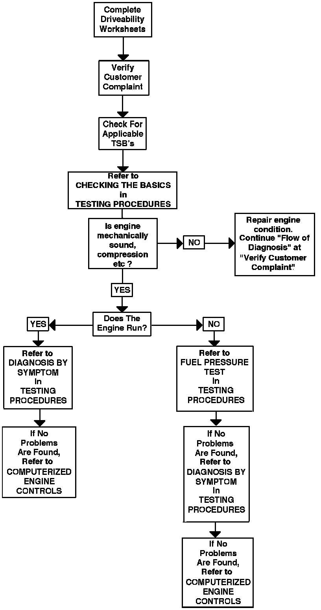

Flow of Diagnosis
FLOW OF DIAGNOSISFlow Of Diagnosis:

1. Complete DRIVEABILITY Worksheets.
2. Verify customer complaint.
3. Check TSB's for manual updates, testing procedures, warranty, and recall information.
4. Perform visual underhood inspection:
a. Vacuum hoses for splits, kinks, and routing.
b. Ignition wiring for cracking, hardness, and proper connections at both the distributor and spark plugs.
c. All wiring for proper connections, pinches, and cuts.
d. Wiring harness for proper routing.
e. Check for missing components.
5. Follow the chart from top to bottom. If no faults are found, proceed to "COMPUTERIZED ENGINE CONTROLS".
Driveability Worksheet (1 Of 2):

Driveability Worksheet (2 Of 2):

DRIVEABILITY WORKSHEETS
Repair History (1 Of 2):

Repair History (2 Of 2):

REPAIR HISTORY WORKSHEETS